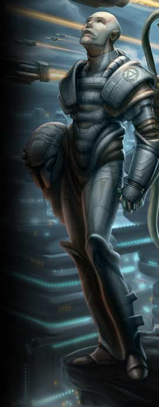
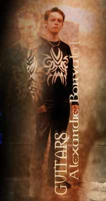

Je suis né le 23 mars 1774 sur les Hautes Terres d'Écosse, j'ai plus de 200 ans et suis immortel...
Ca fait 12 ans que je passe mes Samedi dans des caves humides à me nourrir de décibels. J'ai écouté de la New-Wave, du Punk, du Classique, de la Pop, du Metal ... En ce moment, c'est plutôt. Contrairement à Arnaud, j'en ai rien à foutre des guitares, mon intérêt étant plus globalement fixé sur la composition dans son intégralité (la guitare restant pour moi un moyen et non une fin en soi). Un seul mot d'ordre pour régler mon sound: "tout à fond et au delà, si possible". Si je joue de la guitare, c'est parce que c'est pour moi l'instrument le plus simple à aborder, qui permet de composer et de faire un max de bruit. Surtout que je suis vraiment nul en solo (je laisse ça au Shred qui le fait à merveille). Pour moi, le plus important étant de faire une bonne chanson (mélodie, ligne de chant, rythmique, paroles) qui fasse vibrer le public, qui les touche d'une façon ou d'une autre. Je reste convaincu que notre rôle en tant qu'artistes est de faire rêver les gens, de les divertir, de leur faire oublier leur quotidien, et pas de leur en mettre plein la vue ou bien d'essayer de les convaincre de ceci ou cela au travers de pseudos messages politiques ou philosophiques (surtout que j'en ai rien à foutre). Notre vocation, dans un premier temps, est de nous faire plaisir (et pas l'argent, quoique ça ne nous gênerait pas d'être millionnaire, mais vu ce qu'on gagne, il vaut mieux se faire plaisir). Et si on aime nos chansons, on se dit qu'il y a quelques chances pour que d'autres aussi. Alors mettez tous les potards à fond et... ENJOY!
Birth : In the Northlands, 200 years ago, and I'm immortal...
I
spend all my saturdays to feed from decibels in wet rooms for 12 years
now.
I listened at new-wave, punk, classical music, pop, metal... Contrary
t-o Aranud, I don't care about guitars, I'm more intersted in writing
songs (guitar is only a way to do it for me). For my sound, it's very
simple : Pump up the volume out of the limits and beyond if possible.
If I play guitar, it's because it's the most simple instrument which
allows you to compose and to make a lot of noise. Moreover, I'm shitty
about solos, and I let the role to Arnaud who "shreds" like
a god. For me, the most important thing is to do a good song (melodies,
rhythm, lyrics) which entertains people, and touches the listener in
a way or another. I'm really convinved that we must, as artist, make
the people dream, entertain, and forget their everyday life, and not
to impress or trying to persuade them of believeing things with philosophical
messages (That I really don't fuckin' care !) Our vocation, is, at first,
to amuse ourselves (and not money ; we agree to earn a lot of money,
but as we don't earn anything, we have to do it for the pleasure).
And when we like a song, we think other people might love it too. So
blow your speakers and... ENJOY !

